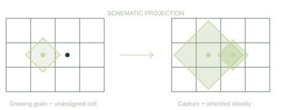

Thermo-mechanical analysis
Finite element calculations provide temperature histories and residual stresses across the part.
Local geometry and boundary conditions →COMPUTATIONAL MATERIALS SCIENCE · BACHELOR’S THESIS, 2024
The microstructure of a part manufactured by laser powder bed fusion influences its mechanical properties and fracture behaviour. This work implements a three-dimensional cellular automaton to model grain evolution from finite element temperature histories and to extract microstructural parameters for a fracture model [1].
The Julia implementation represents nucleation, melting, remelting and competitive grain growth using decentered octahedra. It was developed within a thermo-mechanical simulation workflow and contributed to a subsequent multi-scale study of Inconel 718 [2].

Thesis. Simulating Grain Growth in PBF-LB/M with a Cellular Automaton Model to Determine Fracture Criticality. Submitted 31 May 2024; supervised by Hannes Panzer [1]. The work combines grain-growth modelling, finite element coupling and microstructure analysis for fracture modelling.
1 / METHODS AND CONTRIBUTION
The cellular automaton connects finite element temperature histories with local grain structure. Grain size, morphology and orientation provide the link to a microstructure-dependent fracture model [1].
Finite element calculations provide temperature histories and residual stresses across the part.
Local geometry and boundary conditions →A refined thermal model resolves heating and cooling associated with the laser passes.
Nodal temperature histories →Interpolated temperatures drive nucleation, remelting and grain growth on a regular Cartesian grid.
Grain size, morphology and orientation →Microstructural descriptors inform the assessment of process-dependent cracking susceptibility.
Comparison of process conditionsContribution of the thesis. Implementation of the Julia CA and FEM interface, grain-parameter extraction, verification studies, and a proposed microstructure-dependent extension of the Johnson–Cook fracture model.
Implementation and contribution
The original implementation supports both a coupled calculation and standalone execution using stored nodal temperatures. Temperatures are interpolated from the FEM mesh to the CA cell centres. Within each thermal interval, the CA updates cell states, nucleates grains according to the undercooling distribution, and advances orientation-dependent growth envelopes.
The decentered-octahedron algorithm of Gandin and Rappaz [3] represents the envelope of dendritic growth. When an envelope contains an eligible neighbouring cell centre, the cell inherits the grain identity and orientation. The thesis also implements an active region near the current build height and a select–test–resolve–update procedure for parallel state updates. These methods and the subsequent grain postprocessing are described in [1, §§3.1–3.2].
“Methods to extract the relevant microstructural parameters were developed, and a fracture model incorporating this information devised.”Schnell [1], Abstract.
2 / SELECTED RESEARCH RESULTS
The thesis examines grain capture at the melt-pool boundary, the influence of cell spacing and the evolution of microstructure through successive layers.
BACHELOR’S THESIS
FERDINAND O. SCHNELL
Controlled single-track calculations were used to examine grain capture and growth from the melt-pool boundary. With bulk nucleation disabled, existing grains grow into the solidifying region. The thesis also reports a mesh study supporting a 2 µm cell spacing for the investigated case (Fig. 4.3, printed p. 43).


Successive heating cycles remelt parts of the existing structure. During cooling, surviving grains grow into the solidifying region and can extend across layer boundaries. The thesis follows these transitions in multilayer calculations and examines the resulting grain distributions.
Postprocessing extracts grain size, aspect ratio and orientation. These descriptors enter a proposed Johnson–Cook fracture-model extension that accounts for grain size and loading direction relative to elongated grains.
Schnell [1], §§4.2–4.3 and 5.1–5.2, printed pp. 44–54.
These results come from the follow-up paper by Panzer et al. [2], which extends the code and model beyond the version included in this repository.

The study combines experimental characterisation with multi-scale simulation. Across the investigated process conditions, simulated grain size and aspect ratio show maximum deviations of 20% and 16% from measurements, respectively.
A representative experimental comparison reports approximately 16% shorter mean crack length for PP3 (350 W, without hatch rotation) than for PP0 (285 W, rotating hatch).
Panzer et al. [2], §§4.1–4.2, pp. 10–12.

3 / GRAIN EVOLUTION
Two successive heating cycles act on a seeded substrate. The first creates a melt pool; as it cools, surviving grains advance into the solidifying region. The second cycle shifts the heated region and remelts part of the newly formed structure.
Growth depends on each grain’s crystallographic orientation and competition with its neighbours. The resulting boundaries record how the growth fronts meet within the melt pool.
Explore the heated and cooled states of both passes, switch between grain identity and temperature, and inspect sections through the three-dimensional volume.

64 × 12 × 40 µm · 0.167 µm cell spacing. Colours identify individual grains; dark regions have no assigned grain.

TIME-RESOLVED OUTPUT
Follow the growth fronts through a fixed section of the three-dimensional grain structure. Heating opens a remelted region; cooling allows the surrounding grains to grow into it. The second pass reshapes the boundaries formed during the first.
 x → 0–64 µm
x → 0–64 µmGRAIN EVOLUTION · TWO THERMAL CYCLES
End of the first cooling interval
Colours follow the same grains throughout both cycles. Dark cells have no assigned grain.


4 / SIMULATION
Explore the two-pass calculation or supply a temperature history from your FEM model. The simulation retains the grain structure between timesteps and exports grain identities, orientations and thermal fields.
julia --project=. --threads=8,0 examples/fem_replay/run.jlRequires Julia 1.10 or newer. Temperature histories are included.
CODE AND DOCUMENTATION
Julia implementation, grain-growth studies and simulation guides.